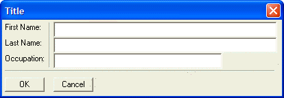

{LINE}
Syntax
{LINE= Columns, Rows }
|
Argument |
Type |
Description |
|
Columns |
N |
The width of the line in columns. |
|
Rows |
N |
The height of the line in rows. |
Description
The {LINE} command draws a thin line vertically or horizontally for the specified number of rows or columns.
Supported By
Alpha Five Version 5 and Above
Limitations
Desktop applications only
Example
The following script shows both vertical and horizontal lines:
|
result = ui_dlg_box("Title",<<%dlg% {region} First Name: |{line=0,3}{sp}|[.64filename]; Last Name: |{sp}|[.64filename]; Occupation: |{sp}|[.48filename]; {line=3,0}; {endregion}; <10OK> <10Cancel> %dlg% ) |

The vertical line is created using the {line=0,3} command. This creates a line 3 rows high. The horizontal line is created using the {line=3,0} command. This creates a line 3 columns wide. The '|' commands after the "First Name:", "Last Name:" and "Occupation:" static text controls divides the dialog into three columns.
 Note : This dialog
uses the {Region} and {Endregion}
commands. It also uses the {sp=number}
command to insert a space in the second column.
Note : This dialog
uses the {Region} and {Endregion}
commands. It also uses the {sp=number}
command to insert a space in the second column.
See Also